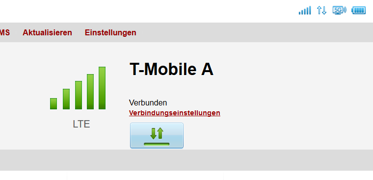
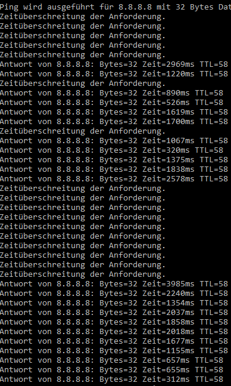

Wir haben jetzt schon einige Monate die HomeNet Box mit Ultra-Tarif und bisher lief alles top. Zwar nicht die volle Bandbreite, aber mehr als genug und immer voller LTE-Empfang.
Seit nun 2 Wochen geht allerdings kaum noch etwas. Der LTE-Empfang bricht bei voller Stärke einfach ab und danach steht erstmal für ein paar Minuten "Kein Service" ...
... bis dann plötzlich wieder voller LTE-Empfang für 30 Sekunden bis 1 Minute vorhanden ist.

Hin und wieder wechselt die Box auch auf 2G-Empfang, was dann Pings in der Höhe von 1-8 Sekunden verursacht.
Ich habe erst überlegt, eine Antenne zu kaufen, allerdings scheint das Signal (da immer voll vor Abbruch) ja nicht das Problem zu sein. Ich habe mal testhalber eine Netzfixierung auf LTE versucht, was allerdings nichts gebracht hat. Das Problem scheint sich auch - wie zuerst gehofft (eventueller Netzüberlastung) - nicht von selbst zu lösen.
Sind aktuell irgendwelche Störungen unter der PLZ 8953 (Donnersbach) bekannt?
Wäre für weitere Tipps zur Problemlösung sehr dankbar.
Christian_E
Da hätt ich jetzt eine Frage.
Habt ihr auch ein TMobile Smartphone?
Dann wäre es interessant, ob nur der Router das Signal verliert oder ob auch die anderen mobilen Geräte kein Signal mehr haben.
Ich vermute hier stark ein Problem beim Router aber damit man das besser eingrenzen kann, wäre genau so eine Überprüfung wichtig.
Bitte um Überprüfung. Danke!
Nexus
Leider nicht, nein. Mit meinem Smartphone bin ich bei A1, darüber bin ich auch gerade via Hotspot im Internet. Dann haben wir noch eines bei Telering, da gibt es auch keine Schwierigkeiten.
Ich könnte höchstens noch die Nachbarn fragen, oder den Router einfach mal auf Verdacht eintauschen.
Christian_E
Es klingt für mich stark nach ein Routerproblem.
Möglich wäre auch den Router mal komplett zurück zusetzen und wieder zu aktivieren.
Vielleicht klappt es dann?
Nexus
Ich habe den Router jetzt auf die Standardeinstellungen zurück gesetzt und das scheint auf den ersten Blick tatsächlich funktioniert zu haben. LTE ist jetzt seit 3 Stunden stabil, keine ständigen Verbindungsabbrüche mehr. Ich weiß zwar nicht, was der Grund für die Schwierigkeiten war, da ich nicht wirklich was am Router geändert habe seit wir den haben, aber anscheinend ist das Problem damit soweit behoben.
Hoffen wir, dass es so bleibt. :-)
Vielen Dank für den Tipp.
Christian_E
Super freut mich.
Hoffen wir, dass das so bleibt. Offenbar hat sich die Routersoftware da in was verlaufen. Sollte hoffentlich nicht mehr passieren.
LG Christian
Nexus
Leider besteht das Problem wohl weiterhin. Gerade ist die LTE Verbindung auf eine schlechte 3G Verbindung gedroppt und scheint jetzt da zu bleiben, bei einem Ping der das surfen kaum noch ermöglicht. Wirklich schade. Ich kann nur versuchen den Router bei der nächsten Gelegenheit einzutauschen und hoffen, dass das das Problem behebt. Wenn nicht, wird es wohl am Netz liegen? Das wäre doof. Es hat jetzt die ersten Monate so gut funktioniert.
Christian_E
Ja dann würde ich wirklich den Router ins Visier nehmen.
Vielleicht gibts die Möglichkeit für ein Tauschgerät - einfach mal mit Tmobile abklären.
Kann auch sein, dass der Router mit dem Antennenmodul ein Problem hat - wenn das ausfällt, kippt die Verbindung von LTE weg auf 3G.
Das könnte das erklären.
Halt uns doch bitte aus dem Laufenden.
LG
Christian
Nexus
So, habe in den letzten Tagen das jetzt auch nochmal mit dem Support abgeklärt und auch die meinten, dass der Router mal angeschaut gehört. Ich bin jetzt endlich dazu gekommen, zum T-Mobile Shop zu fahren und habe denen die Sache geschildert.
Der Router gehört eingeschickt, dauert 2-3 Wochen. Ersatzgerät haben sie leider keines. Die Frage, ob sie ein Ersatzgerät anschaffen und mich benachrichtigen könnten, wurde mit Nein beantwortet. Einen der Router aus der Vitrine durfte ich auch nicht mitnehmen.
Rabatt für die fast 2 Monate ohne Internet wird es keinen geben. Die Frage, ob wir den Vertrag kündigen können, wenn das Problem nach diesen 3 Wochen noch immer nicht behoben ist, wurde mit der verbleibenden Vertragsbindung von 1 1/2 Jahren verneint.
Ich hoffe nicht, dass erwartet wird, dass ich für 1 1/2 Jahre jeden Monat 50€ für kein Internet bleche. Sehr ärgerlich. :-/
Wir sind jetzt also mal 2-3 Wochen komplett ohne Netz und müssen uns mit den Handys und mobilen Hotspots helfen.
Bearbeitet
von Nexus
Nexus
Gut, habe jetzt den Router vor 2 Tagen zurück bekommen. Es wurde kein Mangel festgestellt, nur die Software upgedatet. Seit 2 Tagen läuft jetzt alles problemlos. Problem scheint hoffentlich dauerhaft gelöst zu sein. =)
EDIT: Nein, hat nicht geklappt. Weiter gehts mit den Problemen. Dann ist es wohl das Netz. :-(
Was bleibt mir jetzt noch an Optionen? Ich verstehe ja, dass ich von den 300 MBit für die ich zahle nicht alles bekomme (60 MBit), aber wenn es schon etwas langsamer ist, soll es doch bitte wenigstens stabil sein. Die ständigen Verbindungsabbrüche und der hohe Ping machen das surfen, telefonieren und spielen halt unmöglich.

Bearbeitet
von Nexus
Nexus
Gut, es hilft ja nichts. Support meint es liegt kein Problem vor und ich werd mich nicht weiter damit rumschlagen, wenn das trotz der 50 € die ich monatlich zahle trotzdem 0,88€/Minute kostet. Vertrag wird gekündigt, zurück zu A1 und Daumen drücken dass deren mobiles Netz besser funktioniert als Ihr Festnetz, weswegen ich ursprünglich zu T-Mobile gewechselt habe.
Semthepro
Geil... bei mir liegt ein sehr änliches problem vor... gerade angemeldet 4 wochen hats ohne probleme funktioniert, jetzt minütliche Ausfälle, neustart und reset erfolglos
Andrea_
Hallo Semthepro,
das bedaure ich sehr. Ich habe dir schon bei deinem anderen Kommentar geantwortet. Können wir bitte dort weiterschreiben?
LG Andrea
MarioM
Am 7/2/2018 um 20:22 schrieb Nexus:
Gut, es hilft ja nichts. Support meint es liegt kein Problem vor und ich werd mich nicht weiter damit rumschlagen, wenn das trotz der 50 € die ich monatlich zahle trotzdem 0,88€/Minute kostet. Vertrag wird gekündigt, zurück zu A1 und Daumen drücken dass deren mobiles Netz besser funktioniert als Ihr Festnetz, weswegen ich ursprünglich zu T-Mobile gewechselt habe.
Wäre für dich Hybrid Internet keine Option?
Ronny P.
Am 7.9.2018 um 13:54 schrieb MarioM:
Wäre für dich Hybrid Internet keine Option?
Ich bin gerade erst über diesen Thread gestolpert und etwas spät dran, aber die letzte Frage fand ich dann schon ziemlich fragwürdig, das möchte Ich noch mitteilen. Keine Ahnung, ob es gut gemeint, aber nur schlecht durchdacht war. Aber haben sie sich eigentlich die vom Ersteller geschilderten Probleme wirklich durchgelesen? Da hat jemand massive(!) Probleme mit dem Dienst für den er Monat für Monat zahlt - und zwar in einem Ausmaß das eine normale Nutzung unmöglich macht. (Ähnlich wie bei mir und vielen anderen zur Zeit btw.) Und der Lösungsvorschlag ist eine Kombination aus diesem (komplett defekten) Dienst mit einem weiteren? Also Ich kaufe mir ein teures Fahrrad das vorne und hinten nicht funktioniert und als Lösung soll ich mir einfach Stützräder kaufen? Damit kann ich zwar meistens nur Schritttempo fahren aber zumindest falle Ich nicht um.....
mfg
Christian_E
Hybrid ist durchaus ein guter Vorschlag, weil da die Festnetzgeschwindigkeit immer da ist (i.d.R. 6-8 MBit oder höher) und sich LTE dazu addiert.
Zum Surfen ist da immer der Leitungspolster - wenn LTE nicht mehr kann, dann ist als Grundlage die Leitung da.
Aber ich geb den Vorpostern schon recht - das ist nicht zufriedenstellend und ja ich verstehe den Unmut.
Wir sind aber nur Techniker die helfen wollen und nicht von Tmobile.
Bei diesen lokalen Erfahrungen kann ich an dieser Stelle nur auf die TMobile Technik verweisen, es lesen auch hier zeitwesie die TMobile Kolleginnen und Kollegen mit.
Ronny P.
Ich verstehe den Hintergedanken für den Hybrid-Vorschlag schon. Dennoch zahlt der User dann auch hier für ein Produkt von dem die Hälfte nicht so funktioniert wie es sollte, weil er immer dann, wenn LTE ausfällt eine schlechtere Leistung hat als es sein sollte, wäre denn das Produkt nicht fehlerhaft. Das wollte Ich damit sagen.
lg
Bearbeitet
von Ronny P.
Christian_E
Ja alles klar.
Stimmt natürlich.
MarioM
Am 10/15/2018 um 12:43 schrieb Ronny P.:
Aber haben sie sich eigentlich die vom Ersteller geschilderten Probleme wirklich durchgelesen?
Klar habe ich das. Aber wenn z.B.: Masten überlastet sind und kein Ausbau in Sicht, ist eine Alternative nicht so schlecht ...
Ronny P.
Ich wollte nicht unhöflich sein, aber zum Ausdruck bringen: es wäre ja immer noch ein "defektes" Produkt, für das der Kunde zahlt, es würde nur kaschiert werden durch die zusätzliche Leitung.
MarioM
Am 10/17/2018 um 08:00 schrieb Ronny P.:
Ich wollte nicht unhöflich sein, aber zum Ausdruck bringen: es wäre ja immer noch ein "defektes" Produkt, für das der Kunde zahlt, es würde nur kaschiert werden durch die zusätzliche Leitung.
{kind=link}